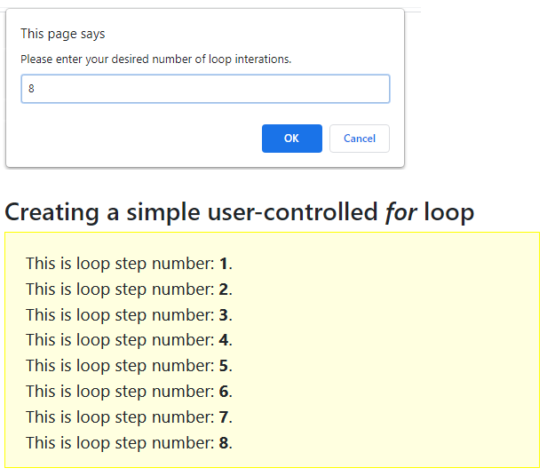

Objectives
In this Lesson, you will learn how to:
- Create a for loop with a counter variable, a starting value, a loop condition and an increment (++) or decrement operator (--)
- Create a while loop with a counter variable that runs only when a tested condition is satisfied
- Create a do…iwhile loop that runs once, and runs again only when a tested condition is satisfied
- Interrupt any loop type with a break command that, when the counter variable reaches a specified value, tells JavaScript to exit the loop
- Interrupt any loop type with a continue command that, when the counter variable reaches a specified value, tells JavaScript to return to the top of the loop as if all the statements have been performed.
In this Lesson, you will meet the following terms:
- JavaScript loop
- Iteration
- Loop counter variable
Exercise Files
In this Lesson, you will work with the following HTML files:
Download the compressed file below and copy it to your websites/javascript/exercises sub-folder.
📄 8.zip
Unzip the five files it contains into a sub-folder named /8.

Contents
Going on and on — until it stops: a JavaScript loop
About the increment and decrement operators
Exercise 8.1: Building a simple for loop
Exercise 8.2: Building a user-controlled for loop
Exercise 8.3: Building a simple while loop
Exercise 8:4: Building a simple do…iwhile loop
Interrupting loops with break and continue
Exercise 8.5: Skipping unlucky number 13
Going on and on — until it stops: a JavaScript loop
A loop is a programming structure that repeats an instruction or series of instructions when certain conditions are satisfied, and then stops. JavaScript offers three types of loops.
The for loop
This is the most common loop in JavaScript, and the one that offers the most control to the developer. Use a for loop when:
- You know in advance how many times you want the loop to repeat, and
- You want the loop condition tested before the loop runs.
The while loop
This is JavaScript’s simplest loop structure. Use a while loop when:
- You don’t know in advance how many times you want the loop to repeat, but
- You want the loop condition tested before the loop runs.
The do…iwhile loop
A variation on the while loop. Use this loop when:
- You don’t know in advance how many times you want the loop to repeat, and
- You don’t want the loop condition tested before the loop runs.
Unlike the similar-sounding while loop, the do…iwhile loop is always performed at least once, because JavaScript tests the required condition only after the first loop is run.
JavaScript Loop
A script that performs a statement or series of statements repeatedly until a certain condition is satisfied. The loop then stops and the next statement in the script after the loop is performed.
About loop conditions
Every loop type contains some type of condition statement. As with the if command, condition statements in loops include comparison operators such as greater than (>) or equal to (==).
- When the condition is tested and satisfied, the loop runs.
- After every time that the loop runs, it tests the condition again.
- The loop will keep repeating until the condition is no longer satisfied.
Before discovering more about these loop types and putting your knowledge in practice, you need to learn about two new assignment operators: increment (++) and decrement (--).
About the increment and decrement operators
In programming, the word 'increment' means 'make larger by one' and its converse of 'decrement' means 'make smaller by one'. You have met only one type of assignment operator so far, an example of which is shown below.
myvar = 42;
As you can see, it has two terms, one on each side of the equals (=) sign. Below are examples of the increment and decrement operators. These contain only a single term and do not require an equals sign.
// This has the same effect as writing firstNumber = firstNumber + 1 firstNumber++; // This has the same effect as writing firstNumber = firstNumber - 1 */ secondNumber--;
These operators work only with numeric variables and are really just a convenient shorthand notation. Now let's move on to the for loop structure.
The for loop structure
A basic for loop in JavaScript would look as shown below.
for (i = 1; i<= 5; i++) {
perform instruction(s);
}
Let's examine each element in detail.
- for: Always type 'for', not 'FOR' of 'For'. The for command name is case sensitive.
- i: Every loop has a counter variable that keeps track of how many times the loop has been performed. By convention, the counter variable is designated by the lower-case letter 'i'. Some developers prefer the letter 'n', while others use the word 'count' or 'counter'.
- i = 1: The loop has to start somewhere. In this example, the starting point is when the counter variable has a value of 1. It could also be 12, 56 or -78.
- i <= 5: You don't want a loop to run indefinitely, so you set an upper limit. In this case, the loop stops when the counter variable reaches the number 5.
- i++: This tells JavaScript to add 1 repeatedly to the counter variable until the variable reaches the upper loop limit (in this case, 5). It does not have to be the increment operator. A loop can contain the decrement operator, i--.
Developers use a special term to describe the performance of a loop: iteration.
Iteration
A single performance of a loop. If a loop runs five times, it is said to have performed five iterations.
Loop Counter Variable
The variable in a loop structure that keeps track of how many loop iterations have been performed. The variable is typically named 'i'. Alternative names include 'n', 'count' or 'counter'.
In Exercise 8.1, you will create a simple for loop structure.
Exercise 8.1: Building a simple for loop
- Open the following file in VS Code and your web browser: 📄 exercise-8-1.html
- After the opening <script> tag, type the following for loop structure.
let i; for (i = 1; i<= 5; i++) { document.write("This is loop step number: <b>"+i+"<\/b>.<br>"); } - Save your web page and view the result in your web browser.
The result should look as shown.

Edit the loop code as follows, resave your web page, and reload your web browser.
for (i = -1; i>= -5; i--)
The result should look as shown.

You can close the exercise-8-1.html file when finished.
More about for loops
Here are three points to remember about the for loop structure in JavaScript:
- Initial and upper values: Unlike the other two loop types, the initial and upper values of a for loop are included within the loop structure itself.
These do not have to be literals, such as '3' or '-42'. They can also be variables whose values come from elsewhere in the code or from a user input. For example:
for (i = baseTemperature; i <= userTemperature; i++);
- In the other two loop types, the initial and upper values are not included in the loop structure, but always come from other statements in the script.
- Curly braces: The for loop does not require curly braches { } if the loop contains only a single instruction. You can include them if you want: they won't cause an error; they are just unnecessary.
If the loop contains multiple instructions, however, they must be enclosed within curly braces.
for (i = 1; i<= 5; i++) { document.write("this is the loop step number: "+i+"<br>"); document.write("this is the loop step multiplied by 4: "+i*4+"<br>"); document.write("this is the loop step divided by 2: "+i/2+"<br>"); document.write("Still looping<br>"); } - Indentation: By convention, loop statements are indented. This is for one reason only: to make them easier to read.
- Statement terminator: Do not type a semi-colon after the loop condition as shown below. This will produce an error.
The general syntax of a for loop is shown below.
for (initialisation; condition statement; counter variable update) {
statements(s) containing counter variable;
}
In Exercise 8.2, you will create a simple for loop in which the number of iterations is not a fixed literal but a variable value input by the web page visitor.
Exercise 8.2: Building a user-controlled for loop
- Open the following file in VS Code and your web browser: 📄 exercise-8-2.html It is similar to the incrementing loop that you worked on in the previous exercise.
- After the opening <script> tag, insert the following window.prompt() statement on a single line.
let userCount = window.prompt("Please enter your desired number of loop iterations."); - Next, edit the loop code as follows.
for (let i = 1; i<= userCount; i++)
- Save your web page and display it in your web browser.
Type a (small) positive number in the window.prompt() box, click OK and view the output in the web browser window.

You can close the exercise-8-2.html file when finished.
The while loop structure
This is the most basic loop in JavaScript. A simple while loop is shown below.
let i = 1;
while (i < 5)
{
perform instruction(s);
i++;
}
Let’s examine each element in detail.
- i = 1: Before running the loop the counter variable is set to an initial value. In this case it is 1, but it could also be 0, 410 or -20. Note that the initial counter value is set outside the loop and not within it.
- while: The while command name is case sensitive.
- i < 5: This is the test condition, enclosed within parenthesis. Like for loops, the condition is tested before the loop is run.
- { }: The statements to be performed are enclosed within curly braces.
- i++: The statement that increments (or decrements) the counter variable is enclosed within the curly braces.
Exercise 8.3: Building a simple while loop
- Open the following file in VS Code and your web browser: 📄 exercise-8-3.html
- After the opening <script> tag, insert the following code.
let i = 1; while (i <= 5) { document.write("This is loop step number: <b>"+i+"<\/b>.<br>"); i++; } - Save your file and view it in your web browser.
The loop should run as shown below.

- Edit the loop code as follows, so that the loop counter variable counts downwards rather than upwards.
let i = 10; while (i >= 1) { document.write("This is loop step number: <b>"+i+"<\/b>.<br>") i--; } - Resave your file and reload your web browser.
The result should look as shown below.

You can close the exercise-8-3.html file when finished.
More about while loops
Here are four points to remember about the while loop structure in JavaScript:
- No initial value: No start value of the counter variable is contained within the while loop structure. You must set this value in a preceding line of the script.
- No upper value: No ending value of the counter variable is contained within the while loop. Something must happen elsewhere in the script that causes the condition statement to become untrue at some point. Otherwise, the loop will run indefinitely.
- Curly braces: The statement(s) to be performed on each loop iteration are enclosed within curly braces { }. By convention, these statements are indented to make them easier to read.
- Increment/decrement: This is always the final instruction within the curly braces of a while loop.
The general syntax of a while is as shown below.
while (condition statement) {
statements(s);
counter variable update;
}
The do…iwhile loop structure
An important difference between do…iwhile and while loops is that the condition test happens at the end of a do…iwhile loop rather than at the beginning. This means that a do…iwhile loop and the statements(s) it contains are always run at least once.
A simple do…iwhile loop is shown below.
let i = 1;
do
{
perform instruction(s);
i++;
}
while (i <= 5);
Let’s examine each element in detail.
- i = 1: The counter variable is set to an initial value before the loop is run. It can be any number. The value is set outside the loop and not within it.
- do: The do command name is case sensitive.
- { }: The statements to be performed are enclosed within curly braces.
- i++: The statement that increments (or decrements) the counter variable is enclosed within the curly braces.
- while i < 5: This is the test condition, enclosed within parenthesis. Unlike for loops, the condition is not tested before the loop is run.
In Exercise 8.4 you will create and modify a simple do…iwhile loop.
Exercise 8:4: Building a simple do…iwhile loop
- Open the following file in VS Code and your web browser: 📄 exercise-8-4.html
- After the opening <script> tag, insert the following code.
let i = 1; do { document.write("This is loop step: <b>"+i+"<\/b>.<br>"); i++; } while (i <= 5); - Save your file and view it in your web browser. The loop should run as shown below.

- Edit the loop condition code as follows, so that the test condition is never met by the loop counter variable.
while (i < -10);
- Resave your file and reload your web browser.
The result should look as shown below.

You can see that the do…iwhile loop still runs once.
You can close the exercise-8-4.html file when finished.
More about do…iwhile loops
Here are five points to remember about the do…iwhile loop structure in JavaScript:
- No initial value: No start value of the counter variable is contained within the do…iwhile loop structure. You must set this value in a preceding line of the script.
- No upper value: No ending value of the counter variable is contained within the do…iwhile loop. Something must happen elsewhere in the script to causes the condition statement to become untrue at some point. Otherwise, the loop will run indefinitely.
- Curly braces: The statement(s) to be performed on each loop iteration are enclosed within curly braces {}. By convention, these statement are indented to make them easier to read.
- Increment/decrement: This is always the final instruction within the curly braces of a do…iwhile loop.
- Condition statement: This is located at the lend of the loop, with the result that the loop and its statements(s) are always run at least once.
The general syntax of a do…iwhile loop is as shown below.
do
{
statements(s);
counter variable update;
}
while (condition statement)
Here are a while and a do…iwhile loop shown side by side. You can see that one is essentially the other turned upside down.

Interrupting loops with break and continue
All three JavaScript loops can include break and/or continue commands with the ability to interrupt loops when the counter variables reach a certain value.
About the break command
The break command sends the following message to JavaScript:
When the counter variable reaches a specified value, exit the loop, and move on the next statement in the script after the loop.
The loops below run only when the counter variable has values of 1, 2 and 3. When the counter variable reaches a value of 4, the loops stop.

The break command comes before the statement that is performed within the loop – in these three examples, a simple document.write() statement.
All three interrupted loops generate the following output in a web browser window.
About the continue command
The continue command also interrupts the running of a loop, but the message it sends to JavaScript is slightly different:
When the counter variable reaches a specified value, don’t perform the statement(s) in the loop, but return to the top of the loop as if all the statements have been performed.
The loop then continues on as normal. You typically use the continue command to handle special or exceptional values of the counter variable.
The loops below run only when the counter variable has values of 1, 2, 3 and 5. When the counter variable reaches a value of 4, the loops stop, return to the top, and then continues on.

Compare the position of the break and continue commands within the three different loop types.
- for: The break and continue commands are located at similar locations — before the loop statements. It is easy to see why. The break and continue conditions are tested before the loop statements are run.
- while and do…while loops: The break and continue commands are located at similar locations — before the loop statements. But when the continue command is present in either loop type, the update counter variable statement (i++) is the first rather than the last statement within the curly braces. To compensate, the initial value is 0 rather than 1, and the upper value is 4 rather than 5.
For example, consider a for loop that counts from 1 to 20. Number 13 is considered unlucky. In Exercise 8.5, your task is to amend such a loop so that it skips the 13th iteration and restarts at number 14.
Exercise 8.5: Skipping unlucky number 13
- Open the following file in VS Code and your web browser: 📄 exercise-8-5.html
- Within the script tag pair, you can see a basic for loop that begins at 1 and terminates at 20.

- Edit the loop code as shown below.
for (let i = 1; i <= 20; i++) { if (i==13) continue; document.write("<b>"+i+"<\/b> | "); } - Save your file and view it in your web browser.
The loop should run as shown below.

You can close the exercise-8-5.html file when finished.
Uploading your JavaScript exercise files to GitHub
Follow these steps below to upload your entire 📁 /javascript sub-folder to your website on GitHub.
- Sign in to Github and click the name of the repository (‘repo’) that holds your web pages.
- On the next GitHub screen displayed, click the Add file button near the right of the screen and then choose Upload files from the dropdown list.

- In File Explorer (Windows 10) or Finder (Apple Mac), select your entire 📁 /javascript sub-folder, and drag-and-drop it to your repository on GitHub.

- Scroll down to the bottom of the GitHub screen, and accept or edit the short message (Add files via upload) in the Commit changes box. Finally, click the green Commit changes button to upload your entire 📁 /javascript sub-folder and all the exercise files it contains.
Your uploaded files are published on GitHub at a web address similar to the following, where username is the username you have chosen for your GitHub account:
https://username.github.io/javascript/exercises/8/exercise-8-1.html
https://username.github.io/javascript/exercises/8/exercise-8-2.html
https://username.github.io/javascript/exercises/8/exercise-8-3.html
https://username.github.io/javascript/exercises/8/exercise-8-4.html
https://username.github.io/javascript/exercises/8/exercise-8-5.html
It may take a few minutes for your uploaded files to appear on GitHub.
Lesson Summary
A loop is a script that performs a statement or series of statements repeatedly until a certain condition is satisfied. The loop then stops and the next statement in the script after the loop is performed. A basic for loop in JavaScript looks as shown below.
for (i = 1; i< = 5; i++) {
perform instruction(s);
}
Every loop has a counter variable (typically denoted by the letter 'i') that keeps track of how many times the loop has been performed, a starting or initial value, an upper limit, and an increment (i++) or decrement (i--) operator that increases or decreases the loop counter variable by one on each iteration of the loop.
In each loop the initial loop counter value is set outside the loop and not within it. The test condition is enclosed within parenthesis, the statement(s) to be performed are enclosed within curly braces, as is the increment or decrement operator.
All three JavaScript loops can include break and/or continue commands with the ability to interrupt loops when the counter variables reaches a certain value.
The break command tells JavaScript that, when the counter variable reaches a specified value, to exit the loop, and move on the next statement in the script after the loop. The break command comes before the statement(s) that are performed within the loop.
The continue command also interrupts the running of a loop, but it the message it sends to JavaScript is slightly different: when the counter variable reaches a specified value, don't perform the statement(s) in the loop, but return to the top of the loop as if all the statements have been performed. The loop then continues on as normal. You typically use the continue command to handle special or exceptional values of the counter variable.
Return to Contents.